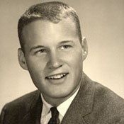

|
|||
| home : obituaries & memories : bio : quotes : photos : dadisms : art : contact | |||
 |
OBITUARIES Thomas Crosby, 63; Retired O.C. Appellate Court Justice Thomas F. Crosby Jr., a retired Orange County appellate court justice, perhaps best known for his 1994 opinion overturning Santa Ana's anti-camping ordinance that forced scores of homeless people out of the city, has died. He was 63. The colorful and popular Crosby died Jan. 23, apparently of a heart attack at his Tustin home. Crosby "was a totally fearless, curmudgeonly, iconoclast who was very bright and who called cases as he saw them," said Bob Wolfe, a research attorney who worked with him. "His favorite expression was 'It'll make you crazy if you let it,' and he was utterly unafraid to take on sacred cows." Born in Long Beach, Crosby graduated from Stanford and earned his law degree at the University of California's Boalt Hall School of Law. He worked with the National Labor Relations Board in the mid-1960s and served in the Peace Corps in Peru. After returning to California, he worked in the office of the Orange County district attorney. He was in private practice from 1973 to 1981. Crosby was appointed to the appellate bench in 1982 by then-Gov. Jerry Brown after serving 13 months on the Orange County Superior Court. Among the decisions he was most proud of, Crosby once said, were his 1994 opinion overturning Santa Ana's anti-camping ordinance, and another one that same year prohibiting the Boy Scouts from expelling a man because he was an atheist. Both opinions were overturned by the state Supreme Court. Crosby retired from the court in 2001. He is survived by his wife, Patty, and sons Scott, 34, and Brett, 30, both of San Diego. |
||